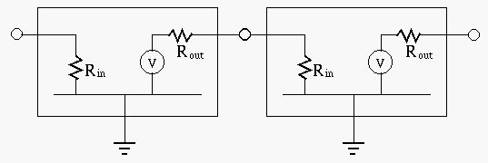
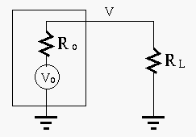
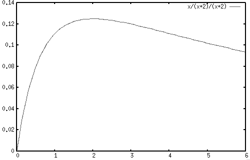
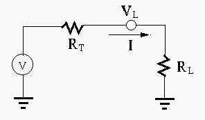
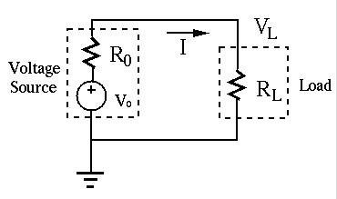

Next: Review and Summary Up: Chapter 1: Basic Quantities Previous: Energy Sources
It is often needed to concatenate two circuits in series (cascade), by connecting the output port of the first circuit, considered as the source, to the input port of the second circuit, considered as the load. Here are some examples:
In general, an active circuit containing active components
(e.g., transistors and operational amplifiers) as well as
passive components (e.g.,  ,
,  and ) can be modeled by an
input resistance
and ) can be modeled by an
input resistance  and a voltage source
and a voltage source  in series
with an output resistance
in series
with an output resistance  , where
is
proportional to the input voltage and
, where
is
proportional to the input voltage and  is the voltage gain.
When two such circuits are cascaded, of the first circuit is
the internal resistance of the source, and of the second circuit
is the resistance of the load.
is the voltage gain.
When two such circuits are cascaded, of the first circuit is
the internal resistance of the source, and of the second circuit
is the resistance of the load.

Consider the following three examples:
The output resistance of the course and the input resistance
of the load form a voltage divider:

For the load to receive maximize voltage, we want
Some times we need to maximize the power (instead of the voltage) delivered from the source to the load. For example, the power amplifier of a stereo system needs to deliver high power to the speakers as the load. Given the internal resistance of the source and the load resistance , the power received by the load is:
| (121) |
 , we can minimize
, we can minimize  to maximize the delivered
power :
to maximize the delivered
power :
| (122) |
, we need to find the optimal value
for to maximize , by solving the following equation:
| (123) |
is equal to the internal resistance ,
will it receive maximum power.
The maximum power received by  is:
is:
| (124) |
| (125) |
 is
is
| (126) |
. The figure below shows the power consumed
by the load resistor when . We see that if is
either smaller than or greater than , is reduced.

The efficiency of the circuit is defined as the ratio of the power
delivered to the load and the power generated by the source :
| (127) |
and the load receives maximal power, but the efficiency
is only . We can improve the efficiency by increasing so
that  approaches 1 when
. But in this case the
power received by the load is reduced.
approaches 1 when
. But in this case the
power received by the load is reduced.
For example, if , the efficiency becomes:
| (128) |
| (129) |

A power transmission line delivers power from power generation (a power plant) to power consumption (e.g., a city). The concern is no longer delivering maximum power (as long as needed power is delivered), but to achieve maximum efficiency in the sense that the power loss along the power transmission line is minimized.
We denote the resistance of the transmission line by and the total
load resistance of the power consumption by . Also denote the voltage
on the consumer's side by  . We have
. We have
:
| i.e. | (130) |
| (131) |
. For example, when the voltage is increased 10 times, the power
loss will be reduced to 1/100. In practice, the voltage can be
as high as a few hundred (69 kV, 115 kV, 230 kV, 500 kV, 765 kV).
Summary: The circuits in the three examples above are essentially
the same, i.e., they all have a voltage source with an internal
resistance (or ), and a load resistance . However, the
circuit will be optimized differently according to different requirements:

, maximize input resistance .
.